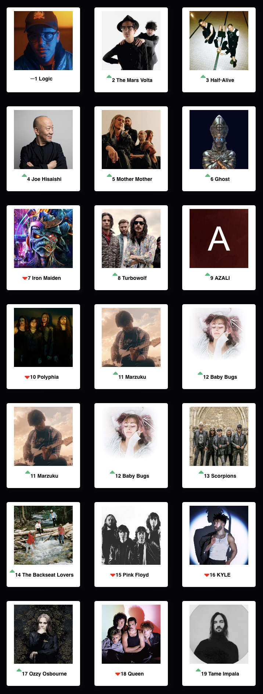

Music
My YouTube Playlists
I enjoy music a lot. I almost always have music going in my apartment, car or have earbuds if I'm out and about doing stuff. I mostly use Spotify and Youtube to listen to music as they have good selection and both work well offline.
Magic Playlist
Magic playlist is for creating full playlists based off a single song. I have had it work well with all genres and all different types of songs
Chosic
Chosic is nice to see your spotify stats, such as the main genres you listen too or a list of all the subgenres you listen to.
Here are my top artists from the last 6 months thanks to Chosic

Chosic does have a bug where it duplicates a couple of the artists when you have it show more of your top artists, that's why Marzuku and Baby Bugs are shown twice.